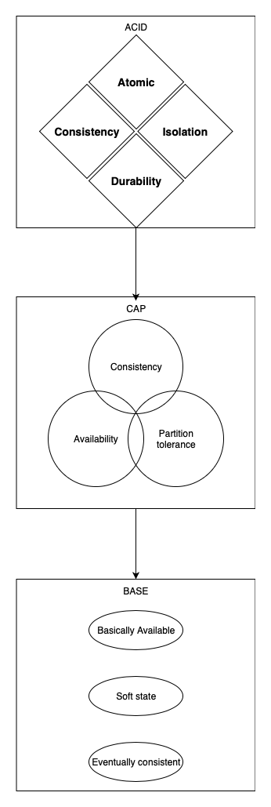

CAP

ACID理论
事务的四个特征：
1、Atomic原子性 事务必须是一个原子的操作序列单元，事务中包含的各项操作在一次执行过程中，要么全部执行成功，要么全部不执行，任何一项失败，整个事务回滚，只有全部都执行成功，整个事务才算成功。
2、Consistency一致性 事务的执行不能破坏数据库数据的完整性和一致性，事务在执行之前和之后，数据库都必须处于一致性状态。
3、Isolation隔离性 在并发环境中，并发的事务是相互隔离的，一个事务的执行不能被其他事务干扰。即不同的事务并发操纵相同的数据时，每个事务都有各自完整的数据空间，即一个事务内部的操作及使用的数据对其他并发事务是隔离的，并发执行的各个事务之间不能相互干扰。
SQL中的4个事务隔离级别：
| 隔离级别 | 特点 | 脏读 | 不可重复读 | 可重复读 |
|---|---|---|---|---|
| 读未提交(read uncommitted) | 另一事务可以看见一个事务提交前的所有状态。 | 是 | 是 | 是 |
| 读已提交(read committed) | 只允许读取到事务提交之后的状态。 | 否 | 是 | 是 |
| 可重复读(repeatable read) | 只允许读取到事务开始时刻的状态。 | 否 | 否 | 是 |
| 序列化(serializable) | 事务串行执行。 | 否 | 否 | 否 |
（1）读未提交
允许脏读。如果一个事务正在处理某一数据，并对其进行了更新，但同时尚未完成事务，因此事务没有提交，与此同时，允许另一个事务也能够访问该数据。例如A将变量n从0累加到10才提交事务，此时B可能读到n变量从0到10之间的所有中间值。
（2）读已提交
允许不可重复读。只允许读到已经提交的数据。即事务A在将n从0累加到10的过程中，B无法看到n的中间值，之中只能看到10。同时有事务C进行从10到20的累加，此时B在同一个事务内再次读时，读到的是20。
（3）可重复读
允许幻读。保证在事务处理过程中，多次读取同一个数据时，其值都和事务开始时刻时是一致的。禁止脏读、不可重复读。幻读即同样的事务操作，在前后两个时间段内执行对同一个数据项的读取，可能出现不一致的结果。保证B在同一个事务内，多次读取n的值，读到的都是初始值0。幻读，就是不同事务，读到的n的数据可能是0，可能10，可能是20 （4）串行化
最严格的事务，要求所有事务被串行执行，不能并发执行。 如果不对事务进行并发控制，我们看看数据库并发操作是会有那些异常情形
（1）一类丢失更新：两个事物读同一数据，一个修改字段1，一个修改字段2，后提交的恢复了先提交修改的字段。
（2）二类丢失更新：两个事物读同一数据，都修改同一字段，后提交的覆盖了先提交的修改。
（3）脏读：读到了未提交的值，万一该事物回滚，则产生脏读。
（4）不可重复读：两个查询之间，被另外一个事务修改了数据的内容，产生内容的不一致。
（5）幻读：两个查询之间，被另外一个事务插入或删除了记录，产生结果集的不一致。
4、Durability持久性
一个事务一旦提交，它对数据库中对应数据的状态变更就应该是永久性的，即使发生系统崩溃或机器宕机，只要数据库能够重新启动，那么一定能够将其恢复到事务成功结束时的状态。
CAP理论
一个经典的分布式系统理论。CAP理论告诉我们：一个分布式系统不可能同时满足一致性（C：Consistency）、可用性（A：Availability）和分区容错性（P：Partition tolerance）这三个基本需求，最多只能同时满足其中两项。
1、一致性（C：Consistency）
在分布式环境下，一致性是指数据在多个副本之间能否保持一致的特性。在一致性的需求下，当一个系统在数据一致的状态下执行更新操作后，应该保证系统的数据仍然处于一直的状态。
对于一个将数据副本分布在不同分布式节点上的系统来说，如果对第一个节点的数据进 行了更新操作并且更新成功后，却没有使得第二个节点上的数据得到相应的更新，于是在对第二个节点的数据进行读取操作时，获取的依然是老数据（或称为脏数 据），这就是典型的分布式数据不一致的情况。在分布式系统中，如果能够做到针对一个数据项的更新操作执行成功后，所有的用户都可以读取到其最新的值，那么 这样的系统就被认为具有强一致性
2、可用性（A：Availability）
可用性是指系统提供的服务必须一直处于可用的状态，对于用户的每一个操作请求总是能够在有限的时间内返回结果。这里的重点是"有限时间内"和"返回结果"。
"有限时间内"是指，对于用户的一个操作请求，系统必须能够在指定的时间内返回对 应的处理结果，如果超过了这个时间范围，那么系统就被认为是不可用的。另外，"有限的时间内"是指系统设计之初就设计好的运行指标，通常不同系统之间有很 大的不同，无论如何，对于用户请求，系统必须存在一个合理的响应时间，否则用户便会对系统感到失望。
"返回结果"是可用性的另一个非常重要的指标，它要求系统在完成对用户请求的处理后，返回一个正常的响应结果。正常的响应结果通常能够明确地反映出队请求的处理结果，即成功或失败，而不是一个让用户感到困惑的返回结果。
3、分区容错性（P：Partition tolerance）
分区容错性约束了一个分布式系统具有如下特性：分布式系统在遇到任何网络分区故障的时候，仍然需要能够保证对外提供满足一致性和可用性的服务，除非是整个网络环境都发生了故障。
网络分区是指在分布式系统中，不同的节点分布在不同的子网络（机房或异地网络） 中，由于一些特殊的原因导致这些子网络出现网络不连通的状况，但各个子网络的内部网络是正常的，从而导致整个系统的网络环境被切分成了若干个孤立的区域。 需要注意的是，组成一个分布式系统的每个节点的加入与退出都可以看作是一个特殊的网络分区。
既然一个分布式系统无法同时满足一致性、可用性、分区容错性三个特点，所以我们就需要抛弃一样：
| 选择 | 说明 |
|---|---|
| CA | 放弃分区容错性，加强一致性和可用性，其实就是传统的单机数据库的选择 |
| AP | 放弃一致性（这里说的一致性是强一致性），追求分区容错性和可用性，这是很多分布式系统设计时的选择，例如很多NoSQL系统就是如此 |
| CP | 放弃可用性，追求一致性和分区容错性，基本不会选择，网络问题会直接让整个系统不可用 |
BASE理论
在分布式（数据库分片或分库存在的多个实例上）系统下，CAP 理论并不适合数据库事务（因为更新一些错误的数据而导致的失败，无论使用什么样的高可用方案都是徒劳，因为数据发生了无法修正的错误）。此外分布式事务XA 虽然保证了数据库在分布式系统下的ACID（原子性、一致性、隔离性、持久性）特性，但也带来了一些性能方面的代价，对于并发和响应时间要求比较高的电商平台来说，是很难接受的。 eBay 尝试了另外一条完全不同的路，放宽了数据库事务的ACID 要求，提出了一套名为 BASE 的新准则。
BASE是Basically Available（基本可用）、Soft state（软状态）和Eventually consistent（最终一致性）三个短语的缩写。BASE理论是对CAP中一致性和可用性权衡的结果，其来源于对大规模互联网系统分布式实践的总结， 是基于CAP定理逐步演化而来的。BASE理论的核心思想是：即使无法做到强一致性，但每个应用都可以根据自身业务特点，采用适当的方式来使系统达到最终一致性。接下来看一下BASE中的三要素：
1、基本可用
基本可用是指分布式系统在出现不可预知故障的时候，允许损失部分可用性----注意，这绝不等价于系统不可用。比如：
（1）响应时间上的损失。正常情况下，一个在线搜索引擎需要在0.5秒之内返回给用户相应的查询结果，但由于出现故障，查询结果的响应时间增加了1~2秒
（2）系统功能上的损失：正常情况下，在一个电子商务网站上进行购物的时候，消费者几乎能够顺利完成每一笔订单，但是在一些节日大促购物高峰的时候，由于消费者的购物行为激增，为了保护购物系统的稳定性，部分消费者可能会被引导到一个降级页面
2、软状态
软状态指允许系统中的数据存在中间状态，并认为该中间状态的存在不会影响系统的整体可用性，即允许系统在不同节点的数据副本之间进行数据同步的过程存在延时。比如订单状态，有一个待支付、支付中、支付成功、支付失败， 那么支付中就是一个中间状态，这个中间状态在支付成功以后，在支付表中的状态同步给订单状态之前，中间会存在一个时间内的不一致。
3、最终一致性
最终一致性强调的是所有的数据副本，在经过一段时间的同步之后，最终都能够达到一个一致的状态。因此，最终一致性的本质是需要系统保证最终数据能够达到一致，而不需要实时保证系统数据的强一致性。
总的来说，BASE理论面向的是大型高可用可扩展的分布式系统，和传统的事物ACID特性是相反的，它完全不同于ACID的强一致性模型，而是通过牺牲强一致性来获得可用性，并允许数据在一段时间内是不一致的，但最终达到一致状态。但同时，在实际的分布式场景中，不同业务单元和组件对数据一致性的要求是不同的，因此在具体的分布式系统架构设计过程中，ACID特性和BASE理论往往又会结合在一起。
分布式事务的一致性协议
XA:作为资源管理器（数据库）与事务管理器的接口标准。目前，Oracle、Informix、DB2和Sybase等各大数据库厂家都提供对XA的支持。
参考资料